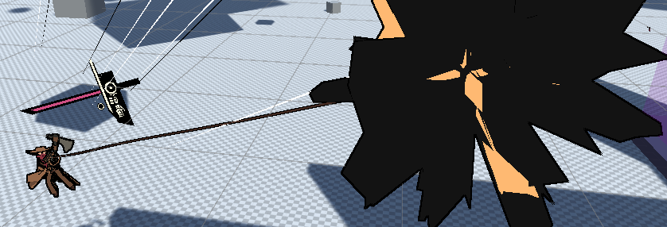

Grappling
There are two types of grappling mechanic, zipping and swinging. The first allows the player to directly move towards a point or enemy, the latter allows the player to swing around the grappled point instead.
Swinging
I prototyped a few methods for swinging originally, one using Unity's built in joints system when I used an older version of the character controller. Eventually I found this article detailing how swinging mechanics can be implemented by constraining the character's movement within a sphere, and so I decided to try my own take on this.
The first hurdle was that I wished for grappling to be an extension to the player controller contained within its own script, but the player controller required velocity to be altered in a specific method to keep physics consistent. My solution was to implement an IAdditionalVelocityCalculation interface which could be added to the controller and calculated within the correct update.
The swinging itself is fairly simple, it constrains the controller's transient position within the radius of the grappled point and velocity is adjusted to only take the perpendicular component. Even with this the player would still keep crashing into the ground so I implemented ground clearance, which automatically adjusts the rope length to try and keep the player above the ground. This uses a raycast on the player's position and will shorten the rope if it meets the correct threshold, the speed at which the rope adjusts can also be changed to prevent the player instantly gaining lots of speed.

Zipping
Zipping also uses an interface called IZippable, this is extended by IEntity and is also used by the Zippable Monobehaviour for standard GameObjects. When the player grapples a point, it is checked whether it has an IZippable component, otherwise it will swing instead, if it does zip the player moves in a straight line towards it. Certain zippables can be Latched, where the player grabs hold mid-air, this simply just causes the player to transition to a Latch state which gets passed the current IZippable. Both zipping and swinging also use their own states to manage player constraints and animations, these are assigned by the grapple script to the ActorStateManager to keep it self contained.